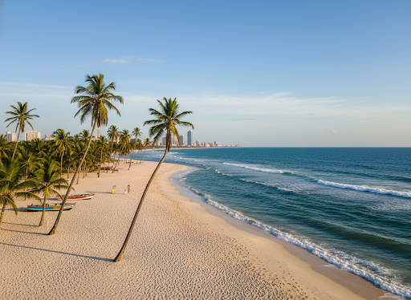
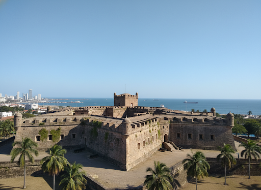
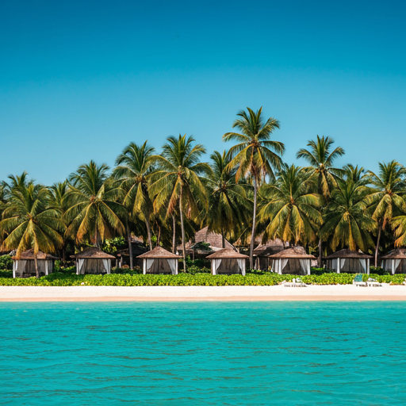
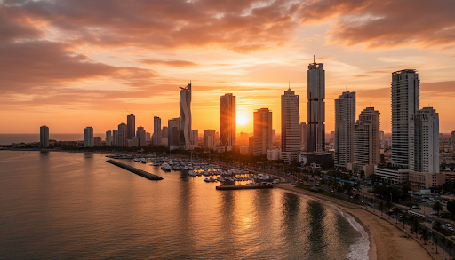

Descubra a Energia de Luanda
Entre o mar da Ilha e a modernidade do Skyline, viva uma experiência única na capital de Angola.
Destinos em Destaque
Explore os contrastes de uma cidade que respira história enquanto abraça o futuro com braços abertos.

Ilha de Luanda
Uma estreita língua de terra com praias paradisíacas, gastronomia internacional e a melhor vida noturna da cidade.

Fortaleza de São Miguel
O guardião da Baía de Luanda. Explore os azulejos históricos e desfrute de uma vista panorâmica inigualável do skyline.

Mussulo
Um santuário de tranquilidade. Desconecte-se do mundo nestas águas calmas e areias brancas acessíveis apenas por barco.
Cultura e Tradição Luandense
Mergulhe no coração da identidade angolana. De festivais de Semba a exposições de arte contemporânea, Luanda é um caldeirão vibrante de criatividade.
| Evento | Local | Data |
|---|---|---|
| Festival Nacional de Cultura | Centro Cultural | Set 22 |
| Noite do Semba Tradicional | Espaço Bahia | Out 05 |
| Bienal de Luanda | Museu da Moeda | Nov 12 |

Património Vivo
Ritmos, cores e histórias que revelam a alma de Luanda. Celebrações, danças e tradições que mantêm viva a identidade cultural da cidade em cada encontro.
